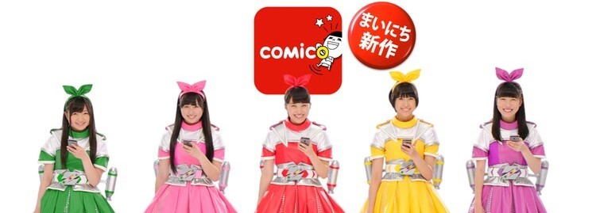
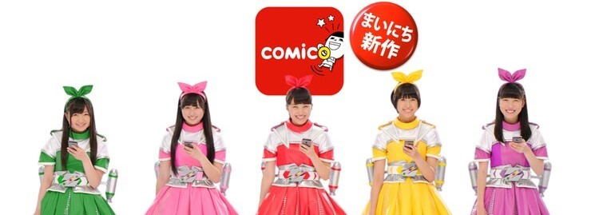
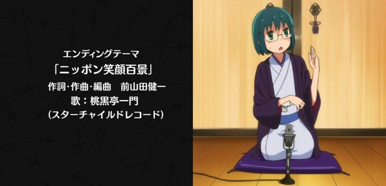
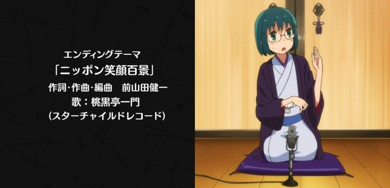
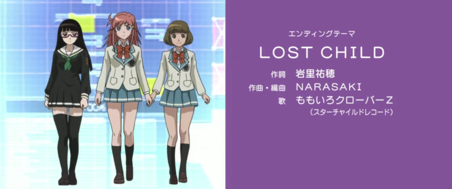
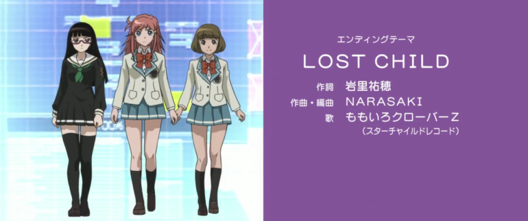
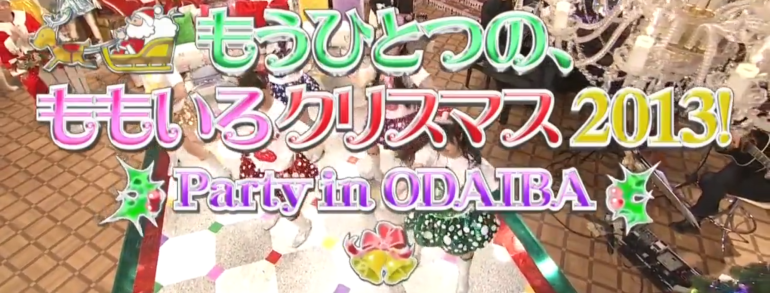
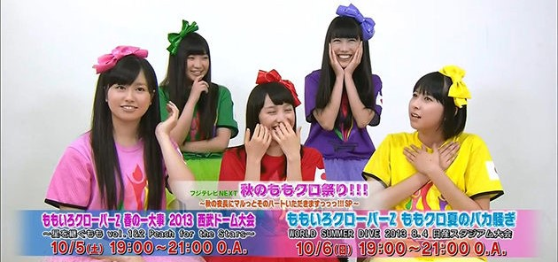
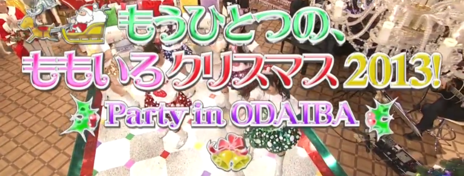
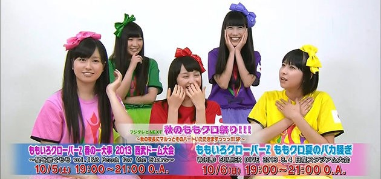

【桃草Chan（ももクロChan）】
從【テレ朝動画】起家，除了許多桃草著名節目企劃外，也重要紀錄許多活動後台花絮。
2011年5月【テレビ朝日】特別整人節目【桃草Chan Z！！（ももクロChanだZ！！）】，邀請桃草武士【（南海キャンディーズ）山里亮太】與【アンガールズ】【（メイプル超合金）安藤なつ】出演。
2012年2月【テレビ朝日】特別節目【桃草Chan ～桃色幸運草Z Channel～（ももクロChan ～ももいろクローバーZ Channel～）】出演。
2012年【テレビ朝日社長賞】受獎。
2013年4月【テレビ朝日】電視台首播版開始播放，持續至2020年9月。2013年3月於【愛知．日本ガイシホール】舉辦【桃色幸運草Z JAPAN TOUR 2013「5TH DIMENSION」（ももいろクローバーZ JAPAN TOUR 2013「5TH DIMENSION」）】邀請【黒柳徹子】VTR登場公布。
2011年【桃草Chan -Momoiro Clover Channel- 決戰星期五下午六點（ももクロChan -Momoiro Clover Channel- 決戦は金曜ごご6時）】DVD-BOX發行。
2012年【桃草Chan -Momoiro Clover Channel- 五色少女起飛（ももクロChan -Momoiro Clover Channel- 飛び出す5色のジュブナイル）】DVD-BOX發行。
2014年【桃草Chan 第3彈 穿越時空的五色鬥士（ももクロChan 第3弾 時をかける5色のコンバット）】DVD與BD發行。
2014年【テレビ朝日．六本木ヒルズ SUMMER STATION】於【東京．六本木ヒルズ】公開收錄。
2015年【桃草Chan電視台播放100集紀念 公開收錄再起！！ 就說很多次了，Chan的C是大寫不是小寫 2015春 in EX THEATER ROPPONGI（ももクロChan地上波放送100回記念 公開収録リターンズ！！ しつこいようですが、Chanの"C"は小文字じゃなくて大文字です 2015春 in EX THEATER ROPPONGI）】於【東京．EX THEATER ROPPONGI】公開收錄。
【桃草Chan副刊（別冊ももクロChan）】
2011年1月【CSテレ朝チャンネル】開始播放精華回顧版，持續至2022年3月。雖然是主節目的剪輯，但有時會有別於主節目而錄製一小段成員私底下的特別開場。
【増刊桃草Chan（増刊ももクロChan）】
【テレビ朝日】不定時特別宣傳節目。
2013年5月主要由玉井詩織、高城蕾妮、有安杏果於【埼玉．東武動物公園】負責節目宣傳。
2014年4月主要由玉井詩織與有安杏果負責節目DVD與BD宣傳。
2010年11月～今
【川上アキラの人のふんどしでひとりふんどし】
由【テレ朝動画】播放，雖然是經紀人kwkm自肥節目，但也經常邀請桃草成員登場。
初期因來賓而更名2次，歷經【川上アキラの人のふんどしでひとり相撲】【川上アキラの人のふんどしでひとり相模】。
2015年1月～今
【新春！！2014年 桃草SP DAY（新春！！2014年 ももクロスペシャルデー）】
由【CSテレ朝チャンネル】播放，7小時半各式桃草參與的節目與演唱活動連續播放。
2014年1月
【桃色幸運草Z 24小時大放送Z！！！（ももいろクローバーZ 24時間大放送だZ！！！）】
由【CSテレ朝チャンネル】播放，24小時各式桃草參與的節目連續播放，聯動活動【桃草夏季犯蠢主題樂園 SUMMER DIVE 2012 Tour（ももクロ夏のバカ騒ぎ SUMMER DIVE 2012 Tour）】開場前直播，2012年4月舉辦記者會。
被公開桃草武士【（南海キャンディーズ）山里亮太】參與【関西テレビ「桃草 VS 百人喪屍 SAVE（ももクロ VS 100人のゾンビ SAVE）」】演出吃到有安杏果吃剩的食物。
獲得2012年9月節目【スカパー！「スカパー！アワード 2012 授賞式」】中的【国内ドラマ．バラエティ大賞】，桃色幸運草Z VTR登場。
2012年6月


【鹽麴玉井詩織 × 坂崎幸之助的御台場民歌村NEXT（しおこうじ玉井詩織 × 坂崎幸之助のお台場フォーク村NEXT）】
【坂崎幸之助的桃色民歌村NEXT（坂崎幸之助のももいろフォーク村NEXT）】
由【フジテレビNEXT】播放，與【（THE ALFEE）坂崎幸之助】一起參與主持，讓桃草接觸不少曲風學習，也邀請不少歌手磨練成員，不乏一些老前輩等級；同時桃草也被要求全員基本吉他彈奏練習，最後進而學習其他樂器組成一個桃草樂團完成表演。
2019年7月更名【鹽麴玉井詩織 × 坂崎幸之助的御台場民歌村NEXT（しおこうじ玉井詩織 × 坂崎幸之助のお台場フォーク村NEXT）】再出發，並由【（THE ALFEE）坂崎幸之助】與玉井詩織一起參與主持。
【坂崎幸之助的桃色民歌村 Go！Go！GUITAR GIRLZ（坂崎幸之助のももいろフォーク村 Go！Go！GUITAR GIRLZ）】
2015年2月由【フジテレビNEXT】播放桃草全員基本吉他彈奏練習花絮，持續至2015年9月。
2014年9月～今
【「走向全國！」桃草徒步全國的帷幕升起（「行くぞ、全国！」ももクロ全国行脚の幕が上がる）】
【「來了！讚岐！」桃草讚岐電影節的帷幕升起（「来たよ！さぬき！」ももクロさぬき映画祭の幕が上がる）】
【傳遞桃草的努力！走向全國！127場電影院見面會（ももクロの本気届けます！行くぞ全国！127館舞台挨拶）】
【出動！127場！桃草徒步全國電影院見面會最終章（行ったぞ！127館！ももクロ舞台挨拶全国行脚フィナーレ）】
由【スカパー！】播放，聯動電影【帷幕升起（幕が上がる）】。
【充滿熱情的電影「帷幕升起」！（映画「幕が上がる」のここが熱い！）】
聯動電影【帷幕升起（幕が上がる）】。
2015年2月～2015年3月
【桃色恐龍Z（ももいろダイナソーZ）】
聯動戲劇【WALKING WITH DINOSAURS】，邀請【（ココリコ）田中直樹】【カンニング竹山】【アンガールズ】主持，其中高城蕾妮外景拜訪桃草武士【所十三】。
2013年4月
【朝氣桃子丼～馬上開動！（すたもも丼～いただきやすっ！）】
由【スカパー！AT-X】播放。
2011年1月～2011年4月

【桃色鶴瓶 ～下面一位～（桃色つるべ ～お次の方どうぞ～）】
與桃草武士【笑福亭鶴瓶】一起參與主持，讓來賓扮演記者相互訪問方式磨練桃草反應與主持。
2014年10月桃草武士【笑福亭鶴瓶】舉辦記者會，桃色幸運草Z VTR登場。
2015年1月～2021年3月，不定期特別節目
【桃草 VS 百人喪屍 SAVE（ももクロ VS 100人のゾンビ SAVE）】
邀請桃草武士【（南海キャンディーズ）山里亮太】與【曙】參與演出。
後續於節目【CSテレ朝チャンネル「桃色幸運草Z 24小時大放送Z！！！（ももいろクローバーZ 24時間大放送だZ！！！）」】被公開桃草武士【（南海キャンディーズ）山里亮太】吃到有安杏果吃剩的食物。
2012年6月

【奇蹟的合作！火力全開！KISS&桃草（奇跡のコラボ！パワー全開！KISS&ももクロ）】
由【NHK BSプレミアム】播放，單曲【在夢之浮世盛開吧（夢の浮世に咲いてみな）】宣傳合作企劃。
2014年12月
【這是桃草！只有這裡能看『天使JUMP』配信預告！（ももクロの！ここでしか見られない『天使とジャンプ』配信予告メッセージ！）】
由【NHKオンデマンド】播放，聯動戲劇【NHK「天使JUMP（天使とジャンプ）」】宣傳。
【Twinkle5的秘密 ～天使們下凡的軌跡～（Twinkle5のひみつ ～地上に舞い降りた天使たちの軌跡～）】【「天使JUMP」全解析 ～桃草 戲劇初挑戰～（「天使とジャンプ」のすべて ～ももクロ ドラマ初挑戦～）】
聯動戲劇【NHK「天使JUMP（天使とジャンプ）」】宣傳。
2013年12月
【毎日PR！紅白】
桃色幸運草Z參與節目【第64回 NHK紅白歌合戦】廣告宣傳。
2013年12月


【リサーチ☆小町Z】
桃色幸運草Z參與節目【Oha！4】單元【リサーチ☆小町Z】標題配音演出。
2014年10月
【ライオンスペシャル 高校生クイズ2014】
擔任官方應援隊，並且【猛烈宇宙交響曲．第七樂章「無限的愛」（Emperor Style）（猛烈宇宙交響曲．第七楽章「無限の愛」（Emperor Style））】為其應援曲。
2014年7月於【東京．潮風公園】公開收錄，聯動節目【日本テレビ「高校生Quiz 2014 桃草 & 藝人橫跨美國炒熱氣氛SP（高校生クイズ 2014 ももクロ & 芸人と盛り上がってアメリカ横断だSP）」】對戰【埼玉．栄東高等学校】 ，聯動節目【ニコニコ生放送「高校生Quiz開幕！桃草未公開片段大大大放送SP！！ ～提前全國高校Quiz祭典～（高校生クイズ開幕！ももクロ未公開映像大大大放出SP！！ ～ひと足先に全国の高校でクイズ祭り～）」】桃色幸運草Z VTR登場播出未公開片段 ，聯動節目【日本テレビ「ZIP！」「高校生クイズがついに開幕！地区大会を突破しアメリカを目指せSP」「第34回 全国高等学校クイズ選手権」】，聯動廣播【女川さいがいFM「おながわ☆なう」】，節目宣傳【日本テレビ「Oha！4」「ZIP！」「スッキリ」「PON！」「ヒルナンデス！」】。
2014年6月～2014年9月
【高校生Quiz 2014 桃草 & 藝人橫跨美國炒熱氣氛SP（高校生クイズ 2014 ももクロ & 芸人と盛り上がってアメリカ横断だSP）】
聯動節目【日本テレビ「ライオンスペシャル 高校生クイズ2014」】，邀請桃草武士【桝太一】主持，對戰【埼玉．栄東高等学校】。
聯動節目【ニコニコ生放送「高校生Quiz開幕！桃草未公開片段大大大放送SP！！ ～提前全國高校Quiz祭典～（高校生クイズ開幕！ももクロ未公開映像大大大放出SP！！ ～ひと足先に全国の高校でクイズ祭り～）」】桃色幸運草Z VTR登場播出未公開片段。
2014年6月～2014年7月
【ロボット日本一決定戦！リアルロボットバトル】
2014年桃色幸運草Z與【（極楽とんぼ）加藤浩次】【安藤美姫】一起參與主持。
聯動節目【日本テレビ「リアルロボットバトル日本一決定戦！本番まで待てない見所SP」「ロボット日本一決定戦！リアルロボットバトルナビ」】。
2013年桃色幸運草Z與【（ツービート）ビートたけし】【所ジョージ】一起參與主持。
聯動節目【日本テレビ「超直前！日本一テレビ ～歌唱王．ワラチャン．リアルロボットバトル．頭脳王～」】。
2013年12月～2014年12月
【桃色幸運草Z緊急特別節目！桃草想在日本電視台搞事！？SP（ももいろクローバーZ緊急特番！ももクロが日テレで何かやらかすらしいぞ！？SP）】
聯動戲劇【日本テレビ「悪夢ちゃん」】主題曲【再會吧、那些愛憐的悲傷（サラバ、愛しき悲しみたちよ）】宣傳。
因2012年9月【TAKARA TOMY】玩具【Furby】廣告記者會睡過頭與【日本テレビ「悪夢ちゃん」】主題曲【再會吧、那些愛憐的悲傷（サラバ、愛しき悲しみたちよ）】記者會遲到，於節目以剃眉妝登場。
2012年10月

【埼玉電視台 × 桃色幸運草Z 3DAYS！！！（テレビ埼玉 × ももいろクローバーZ 3DAYS！！！）】
節目【HOT WAVE】【V-Clips】與【WHITE HOT BLIZZARD MOMOIRO CHRISTMAS 2013 ～美麗的極寒世界～（WHITE HOT BLIZZARD MOMOIRO CHRISTMAS 2013 ～美しき極寒の世界～）】演唱活動直播宣傳。
2013年12月

【桃草團（ももクロ団）】【桃草團 × BOT（ももクロ団 × BOT）】
包含許多桃草著名節目企劃，2011年9月改由高城蕾妮與有安杏果以【事務所請幫推小隊（事務所に推され隊）】為主要負責節目，並轉換為【桃草團 × BOT（ももクロ団 × BOT）】，其中BOT的涵義為【BOSS】【推され隊】音譯的縮寫。
2012年【桃草團 全力彙整導演剪輯版 Vol.1（ももクロ団 全力凝縮ディレクターズカット版 Vol.1）】【桃草團 全力彙整導演剪輯版 Vol.2（ももクロ団 全力凝縮ディレクターズカット版 Vol.2）】【桃草團 全力彙整導演剪輯版 Vol.3（ももクロ団 全力凝縮ディレクターズカット版 Vol.3）】 【桃草團 全力彙整導演剪輯版 Vol.4（ももクロ団 全力凝縮ディレクターズカット版 Vol.4）】【桃草團 全力彙整導演剪輯版 Vol.5（ももクロ団 全力凝縮ディレクターズカット版 Vol.5）】BD發行。
2013年【桃草團 全力彙整導演剪輯版（ももクロ団 全力凝縮ディレクターズカット版）】DVD-BOX發行，【桃草團 × BOT（ももクロ団 × BOT）】DVD-BOX與BD-BOX發行。
【桃草團一舉放送（ももクロ団一挙放送）】
2012年6月【CS TBSチャンネル】開始連續播放版，持續至2012年11月。
2012年1月～2012年12月

【月刊 桃色幸運草Z（月刊 ももいろクローバーZ）】
2011年7月


【桃草俱樂部xoxo（ももクロくらぶxoxo）】
公開許多桃草第一手情報。
2012年單曲【再會吧、那些愛憐的悲傷（サラバ、愛しき悲しみたちよ）】企劃活動【桃草放送室宣傳？！ ～新曲於學校宇宙初解禁Z～！！！（ももクロが放送室ジャック？！ ～学校で新曲を宇宙初解禁しちゃうんだZ～！！！）】，並於【神奈川．横浜市立吉田中学校】舉辦【放送室宣傳真心不騙？！到中學驚喜訪問！！（本当に放送室ジャック？！中学校にサプライズ訪問！！）】演唱活動。
2013年於【東京．東京国際フォーラム】舉辦【日本放送 桃色幸運草Z 桃草俱樂部xoxo ～Valentine DE NIGHT～Z！（ニッポン放送 ももいろクローバーZ ももクロくらぶxoxo ～バレンタイン DE NIGHT だぁ～Z！）】，並於會場限定【桃色幸運草Z的All Night Nippon Mobile總集篇 Vol.2（ももいろクローバーZのオールナイトニッポンモバイル総集編 Vol.2）】CD販售，【滿載「桃草」私底下對話USB「私密錄音帶～Ura ShaBeri～」（「ももクロ」の裏トーク満載のUSB入り「裏カセット～Ura ShaBeri～」）】USB販售。
2013年【民放ラジオ統一キャンペーン「ラジオがやってくる！」】於【東京．住吉小学校】演唱活動與公開收錄。
2013年【ニッポン放送「ラジオパーク in 日比谷 2013 ～緑と、家族と、音楽と～」】於【東京．日比谷公園】公開收錄。
2014年於【神奈川．横浜アリーナ】舉辦【日本放送開台60週年紀念 桃色幸運草Z 桃草俱樂部xoxo ～Valentine DE NIGHT～Z！ 2014（ニッポン放送開局60周年記念 ももいろクローバーZ ももクロくらぶxoxo ～バレンタイン DE NIGHT だぁ～Z！ 2014）】，並於會場限定【桃色幸運草Z的All Night Nippon Mobile總集篇 Vol.3（ももいろクローバーZのオールナイトニッポンモバイル総集編 Vol.3）】CD販售，【滿載「桃草」私底下對話USB「私密錄音帶～Ura ShaBeri II～」（「ももクロ」の裏トーク満載のUSB入り「裏カセット～Ura ShaBeri II～」）】USB販售。
2015年於【神奈川．横浜アリーナ】舉辦【桃色幸運草Z 桃草俱樂部xoxo ～Valentine DE NIGHT～Z！ 2015（ももいろクローバーZ ももクロくらぶxoxo ～バレンタイン DE NIGHT だぁ～Z！ 2015）】，並於會場限定【桃色幸運草Z的All Night Nippon Mobile總集篇 Vol.4（ももいろクローバーZのオールナイトニッポンモバイル総集編 Vol.4）】CD販售，【滿載「桃草」私底下對話USB「私密錄音帶～Ura ShaBeri III～」（「ももクロ」の裏トーク満載のUSB入り「裏カセット～Ura ShaBeri III～」）】USB販售。
2012年4月～今
【事務所請幫推小隊的All Night Nippon R（事務所に推され隊のオールナイトニッポンR）】
2015年於【神奈川．センテニアルホール】公開收錄，高城蕾妮與有安杏果參與主持，百田夏菜子、玉井詩織、佐佐木彩夏來賓登場，並於會場限定【桃色幸運草Z的All Night Nippon Mobile總集篇 Vol.4（ももいろクローバーZのオールナイトニッポンモバイル総集編 Vol.4）】CD販售，【滿載「桃草」私底下對話USB「私密錄音帶～Ura ShaBeri III～」（「ももクロ」の裏トーク満載のUSB入り「裏カセット～Ura ShaBeri III～」）】USB販售。
2015年2月
【ニッポン放送開局60周年記念】
為廣播【ニッポン放送】開台60週年紀念活動，包含紀念曲【難以忘懷的音樂（忘れられぬミュージック）】，邀請多名知名歌手參與錄製，和【松任谷由実】【大原櫻子】與樂團【ゆず】【back number】合作演唱。
2014年7月廣播【ニッポン放送「ニッポン放送開局60周年記念 ラジオで聴いた「忘れられぬミュージック」」】；11月於【神奈川．横浜アリーナ】舉辦【ニッポン放送開局60周年記念「オールナイトニッポン Radio Live 忘れられぬミュージック」】演唱活動，官方小冊子隨附【難以忘懷的音樂（忘れられぬミュージック）】音樂CD，聯動廣播【ニッポン放送「オールナイトニッポンGOLD 忘れられぬミュージックスペシャル」】。
2014年7月～2014年11月
【桃色幸運草Z 經紀人kwkm的All Night Nippon R（ももいろクローバーZ チーフマネージャー川上アキラのオールナイトニッポンR）】
2014年於【神奈川．センテニアルホール】公開收錄，並於會場限定【桃色幸運草Z的All Night Nippon Mobile總集篇 Vol.3（ももいろクローバーZのオールナイトニッポンモバイル総集編 Vol.3）】CD販售，【滿載「桃草」私底下對話USB「私密錄音帶～Ura ShaBeri II～」（「ももクロ」の裏トーク満載のUSB入り「裏カセット～Ura ShaBeri II～」）】USB販售。
2014年2月
【桃色幸運草Z的All Night Nippon（ももいろクローバーZのオールナイトニッポン）】
2012年11月【「第63回 NHK紅白歌合戦」出場歌手発表会】聯動廣播。
2014年6月，首次廣播深夜公開收錄全員到齊，含【Ustream】直播。
2012年11月後不定期
【桃色幸運草的All Night Nippon Mobile（ももいろクローバーのオールナイトニッポンモバイル）】
由【オールナイトニッポンモバイル】播放。
2012年於【東京．渋谷公会堂】舉辦【ミューコミ＋プラス presents ミューフェス 2012 ～Spring～ ライブ1000本観戦アナ吉田のサブカル全部乗せ！】會場限定【桃色幸運草Z的All Night Nippon Mobile總集篇 Vol.1（ももいろクローバーZのオールナイトニッポンモバイル総集編 Vol.1）】CD販售。
2010年11月～2011年10月

【桃草的LET'S LISTENING TIME！（ももクロちゃんのLET'S LISTENING TIME！）】
2010年6月
【高城的60分鐘4回合對抗（高城の60分4本勝負）】
封面邀請桃草武士【所十三】設計。
2015年3月
【桃色聖誕 2014 埼玉超級競技場大會 ～Shining Snow Story～（ももいろクリスマス 2014 さいたまスーパーアリーナ大会 ～Shining Snow Story～）】
2014年12月
【桃草夏季犯蠢主題樂園 2014 日產體育場 ～桃神祭～（ももクロ夏のバカ騒ぎ 2014 日産スタジアム大会 ～桃神祭～）】
2014年7月
【桃草春季幹大事 2014 國立競技場大會 ～NEVER ENDING ADVENTURE 迎向夢想彼端～（ももクロ春の一大事 2014 国立競技場大会 ～NEVER ENDING ADVENTURE 夢の向こうへ～）】
2014年3月
【桃色聖誕 2013 美麗的極寒世界（ももいろクリスマス 2013 美しき極寒の世界）】
2013年12月
【桃草夏季犯蠢主題樂園 WORLD SUMMER DIVE 2013（ももクロ夏のバカ騒ぎ WORLD SUMMER DIVE 2013）】
2013年7月～2013年8月
【桃色聖誕 2012 King of Live（ももいろクリスマス 2012 King of Live）】
2012年12月
【桃草夏季犯蠢主題樂園 SUMMER DIVE 2012 Tour（ももクロ夏のバカ騒ぎ SUMMER DIVE 2012 Tour）】
2012年6月～2012年8月


【新．桃草61分鐘3回合對抗（新．ももクロ61分3本勝負）】
2013年8月開始連載。
【桃草61分鐘3回合對抗（ももクロ61分3本勝負）】
2013年2月開始連載，持續至2013年6月。
2013年2月～今

【Momoiro Clover Film Z 電影『帷幕升起』 桃色幸運草Z 公式寫真書（Momoiro Clover Film Z 映画『幕が上がる』 ももいろクローバーZ オフィシャル．フォトブック）】
配合電影【帷幕升起（幕が上がる）】作品。
2015年2月
【桃草流 ～與5人教學相長的過程～（ももクロ流 ～5人へ伝えたこと 5人から教わったこと～）】
經紀人kwkm自肥作品，2014年6月於【群馬．LABI1高崎】玉井詩織與經紀人kwkm舉辦對談活動，同時宣傳書報【Quick Japan Vol.114】，含【Ustream】直播。
2014年6月
【桃草點滴記錄 桃色幸運草Z公式記者追蹤報導 2011～2013（ももクロ活字録 ももいろクローバーZ公式記者追っかけレポート 2011～2013）】
整合【BUBKA】連載的作品。
2013年8月
【桃色幸運草Z 戀愛制服（ももいろクローバーZ 恋する制服）】
配合戲劇【桃子連續劇（ももドラ）】作品。
2011年於【埼玉．さいたまスーパーアリーナ】舉辦【桃色聖誕 2011 埼玉超級競技場大會（ももいろクリスマス 2011 さいたまスーパーアリーナ大会）】演唱活動先行販售寫真書，2012年正式販售。
2011年12月～2012年1月
【桃子本 ～桃色幸運草公式寫真書～（もも本 ～ももいろクローバー公式ビジュアルブック～）】
2011年2月
【桃年史 2011-2012 全力少女飛奔於秋冬春夏（ももクロニクル 2011-2012 全力少女が駆けぬけた秋冬春夏）】
【桃年史 2012-2013 全力少女飛奔於秋冬春夏（ももクロニクル 2012-2013 全力少女が駆けぬけた秋冬春夏）】
【桃草Chan（ももクロChan）】公式書發行。
2014年11月
【桃年史 1 全力少女飛奔於秋冬春夏（ももクロニクル 1 全力少女が駆けぬけた秋冬春夏）】
【桃草Chan（ももクロChan）】公式書發行。
2012年11月
【『桃草Chan』Presents 桃草七回合試練對抗 2012（『ももクロChan』Presents ももクロ試練の七番勝負 2012）】
2012年於【東京．東京キネマ倶楽部】舉辦【『桃草Chan』Presents 桃草七回合試練對抗 epsode.2（『ももクロChan』Presents ももクロ試練の七番勝負 epsode.2）】的作品。
2012年4月
【『桃草Chan』Presents 十回合試練對抗 週末女主角 桃色幸運草Z（『ももクロChan』Presents 試練の十番勝負 週末ヒロイン ももいろクローバーZ）】
2011年於【東京．東京キネマ倶楽部、東京．DUO MUSIC EXCHANGE、東京．日比谷野外音楽堂】舉辦【『桃草Chan』Presents 桃草七回合試練對抗（『ももクロChan』Presents ももクロ試練の七番勝負）】，再補上第八回合來賓【川上アキラ】登場，主題：大人；第九回合來賓【佐々木敦規】登場，主題：演出；第十回合來賓【（スマイレージ）和田彩花】登場，主題：隊長的作品。
2011年9月


【桃色幸運草Z「偶像道場」（ももいろクローバーZ「アイドル道場」）】
2014年12月於【B.L.T.】開始連載，持續至2015年1月。
【川上道場】
2013年1月於【B.L.T.】開始連載，持續至2014年11月。
2013年1月～2015年1月
【桃色幸運草Z 日曆 2013 公主幸運草（ももいろクローバーZ 日めくりカレンダー 2013 姫クロ）】
2012年10月～2012年12月
【出没注意】
於【B.L.T.】連載，前期企劃百田夏菜子主要負責換裝拍攝。
2011年6月～2012年12月


【Quick Japan Special Issue 桃色幸運草Z ～Compass of the dream～ 2013-2014（Quick Japan Special Issue ももいろクローバーZ ～Compass of the dream～ 2013-2014）】
同年於【埼玉．西武ドーム】舉辦【公式粉絲俱樂部「ANGEL EYES」限定活動「想來就來！ ～只限需有專屬白色貝雷帽♡～」（公式ファンクラブ「ANGEL EYES」限定イベント「誰でもカモ～ン！ ～ただし、ホワイトベレーの方に限ります♡～」）】演唱活動先行販售。
2014年4月

【桃草PIA（ももクロぴあ）】
vol.2特典含未來活動【高城蕾妮首場音樂會 20XX 高城的逆襲！！！ ～茄子也不錯～（暫定）（高城れにファーストコンサート 20XX 高城の逆襲！！！ ～ナスだっていいじゃん～（仮））】參加入場券抽獎，並於2015年【高城的60分鐘4回合對抗（高城の60分4本勝負）】高城蕾妮個人演唱活動兌現。
vol.1合作特典含票卡夾。


【桃色☆死鬥（ももいろ☆デスマッチ）】
連載型。
2012年6月～2013年1月
【朝著桃色幸運草Z追蹤報導的方向跨越（ももいろクローバーZ追っかけレポートの向こう側）】
2014年9月開始連載。
【桃色幸運草Z追蹤報導（ももいろクローバーZ追っかけレポート）】
2012年1月開始連載，持續至2014年8月。
2012年1月～2017年10月


【娛樂消息！！（エンタメ発見マガジン！！）】
連載型。
2010年9月～2012年9月
【桃色運動（ももスポ）】
連載型。
2010年8月～2011年2月


【桃草巧克力威化餅（ももクロマンチョコ）】
內含20種桃草【Z傳說 ～永無止境的革命～（Z伝説 ～終わりなき革命～）】【猛烈宇宙交響曲．第七樂章「無限的愛」（猛烈宇宙交響曲．第七楽章「無限の愛」）】【再會吧、那些愛憐的悲傷（サラバ、愛しき悲しみたちよ）】造型聯名【聖魔大戰（ビックリマン）】貼紙，，外加2種隱藏版。
2013年9月～2013年11月
【pop'n bubble＜桃草＞（ポップンバブル＜ももクロ＞）】
LOTTE泡泡糖合作企劃，其中抽獎獎項【撒嬌人型（あまえんぼ人形）】邀請桃草武士【小城徹也】設計。
2013年6月～2014年1月
【桃色幸運草Z Valentine SP入場券抽獎活動（ももいろクローバーZ バレンタインスペシャルイベント入場券プレゼントキャンペーン）】
於FamilyMart購買LOTTE零食參加2013年2月於【東京．東京国際フォーラム】舉辦【日本放送 桃色幸運草Z 桃草俱樂部xoxo ～Valentine DE NIGHT～Z！（ニッポン放送 ももいろクローバーZ ももクロくらぶxoxo ～バレンタイン DE NIGHT だぁ～Z！）】入場券抽獎。
2013年1月
【桃色幸運草爽（ももいろクローバー爽）】
與LOTTE【爽】冰淇淋合作，並且【PUSH】為其廣告曲，2012年4月舉辦記者會，邀請桃草武士【（南海キャンディーズ）山里亮太】主持。
【長友佑都】【澤穂希】【宮間あや】共演。另外配合奧運宣傳，部分廣告代表色佐佐木彩夏轉換藍色系服飾，而高城蕾妮轉換黑色系服飾。
百田夏菜子特別遠征【義大利】交流【長友佑都】。
2012年6月於【宮城．仙台市立折立中学校】舉辦【前往你的學校應援吧！（あなたの学校に応援しに行っちゃうぞ！）】演唱活動，7月聯動東日本大地震特別節目【仙台放送「ともに」】廣告。
2012年7月於【東京．日本大学豊山高校】舉辦【前往你的學校應援吧！（あなたの学校に応援しに行っちゃうぞ！）】演唱活動，交流因升學將解散的桃草武士團體【護國寺幸運草Z（ごこくじクローバーZ）】，桃草武士團體【護國寺幸運草Z（ごこくじクローバーZ）】合作曲目【Chai Maxx】。
第二波，聯動LOTTE製作App【爽快！桃草紙蓋上的Tour（爽快！ももクロフタの上ツアー）】AR演唱活動，演出曲目【（アタシハアイス）】（4月官網先行配信，作詞．作曲：嵐田光），單元網路節目【桃草爽快！3秒！？Cooking！！（ももクロの爽快！3秒！？クッキング！！）】。
2012年4月～2013年7月

【桃色幸運草Zero LIVE ～百事健康又Zero卡路里Z！～（ももいろクローバーZero LIVE ～ペプシはトクホもZeroカロリーなんだZ！～）】
2013年合作企劃購買百事可樂產品【ペプシ スペシャル】參加入場券抽獎，當日總共玩了4次【Chai Maxx】。
【スペシャル】
以【桃色幸運草Zero】自稱，【武田鉄矢】【ダウンタウン】共演。
購買百事可樂產品【スペシャル】參加2014年1月於【埼玉．コミュニティアリーナ】舉辦【桃色幸運草Zero LIVE ～百事健康又Zero卡路里Z！～（ももいろクローバーZero LIVE ～ペプシはトクホもZeroカロリーなんだZ！～）】入場券抽獎。
2013年8月～2014年1月


【格言T恤馬上送！桃草 × B.L.T.定期訂閱活動（格言Tシャツがもれなくもらえる！ももクロ × B.L.T.定期購読キャンペーン）】
格言設計參考2014年10月合作企劃【桃色幸運草Z 日曆 2015 公主幸運草（ももいろクローバーZ 日めくりカレンダー 2015 姫クロ）】。
2014年12月～2015年1月
格言設計參考2013年10月合作企劃【桃色幸運草Z 日曆 2014 公主幸運草（ももいろクローバーZ 日めくりカレンダー 2014 姫クロ）】。
2013年12月～2014年1月
格言設計參考2012年10月合作企劃【桃色幸運草Z 日曆 2013 公主幸運草（ももいろクローバーZ 日めくりカレンダー 2013 姫クロ）】。
2012年11月～2013年1月


【PJ Message T】
第零波，引用【粉紅瓊斯（ピンキージョーンズ）】歌詞的T恤。
【AMKSR T恤（AMKSR Tシャツ）】
第一波。
【momoclo BORDER T恤（momoclo BORDER Tシャツ）】
第二波。
【主推T恤（推しメンTシャツ）】【箱推T恤（箱推しTシャツ）】
第三波，其中【箱推T恤（箱推しTシャツ）】邀請【新津保建秀】拍攝，2011年8月並於【東京．ビームスT原宿】舉辦【桃色幸運草Z PHOTO EXHIBITION（ももいろクローバーZ PHOTO EXHIBITION）】展覽與【kwkm推薦避暑祭典（納涼kwkmおしはがし祭り）】活動。
【桃色武士四寶（桃色武士四弾）】
第四波，包含夾克【"省" -SHO-】、螢光棒袋【"閃" -SEN-】、絲巾【"巾" -KIN-】、外套【"首" -SYU-】。
【AMKSR 2 T恤（AMKSR 2 Tシャツ）】【AMKSR KIDS T恤（AMKSR KIDS Tシャツ）】
第五波，改版第一波【AMKSR T恤（AMKSR Tシャツ）】，並包含小孩版；同時第三波跟著再販，並於【東京．ビームスT原宿】舉辦【桃草小孩大人T恤（ももくろこどもおとなてぃーしゃつ）】活動。
2011年4月～2013年8月


 

【桃草 × comico（ももクロ × comico）】
與comico漫畫網站合作，邀請導演【本広克行】，並且【Chai Maxx ZERO】為其廣告曲。
抽獎獎項包含【オリジナルQUOカード】，聯動活動【桃色聖誕 2014 埼玉超級競技場大會 ～Shining Snow Story～（ももいろクリスマス 2014 さいたまスーパーアリーナ大会 ～Shining Snow Story～）】與聯動節目【フジテレビNEXT「坂崎幸之助的桃色民歌村NEXT（坂崎幸之助のももいろフォーク村NEXT）」】參加入場券抽獎。
2014年8月～2015年1月


【MOON PRIDE】
作詞．作曲．編曲：Revo，動畫【美少女戰士Crystal】第一、二期主題曲。
2014年舉辦【「美少女戰士Crystal」先行プレミア上映会 美少女戦士セーラームーン 月野うさぎバースデーパーティ in スペシャルViVi Night】演唱活動。
單曲於全國各車站發【美少女戰士】合作卡牌宣傳，聯動書報【美少女戦士セーラームーンCrystal 公式ファーストビジュアルブック】。
【月虹】
作詞：（漫畫家【武内直子】另一個身分）白薔薇 sumire 作曲．編曲：小坂明子，動畫【美少女戰士Crystal】第一、二期片尾曲。
2014年7月～2015年7月
【美少女戦士セーラームーン総柄パーカー】
推出同年2月舉辦【MTV LIVE 2014 supported by SHIDAX with LIVE DAM ～"美少女戦士セーラームーン" THE 20TH ANNIVERSARY MEMORIAL TRIBUTE～】當日桃草身穿五色合作周邊連帽外套。
2014年6月
【MTV LIVE 2014 supported by SHIDAX with LIVE DAM ～"美少女戦士セーラームーン" THE 20TH ANNIVERSARY MEMORIAL TRIBUTE～】
美少女戰士20週年紀念演唱，邀請【VJ Boo】主持，高城蕾妮化了一臉動畫【美少女戰士】的【月野兔】妝。
2014年2月

【聖鬥士星矢 LEGEND of SANCTUARY】
動畫監督【佐藤竜雄】，佐佐木彩夏參與【（アテナ）城戸沙織】配音演出。
2014年4月舉辦公開錄音宣傳活動，2014年6月與7月於【東京．新宿バルト9】首映與見面會，其中7月那場變換劇中短髮姿態登場。
2014年【聖鬥士星矢 LEGEND of SANCTUARY】DVD、BD、BD-BOX發行。
2014年6月～2014年7月

【小美人魚】【星際寶貝】
2013年8月節目【NHK「みんなをつなぐ魔法のメロディー」】合作企劃【小美人魚】曲目【Under the Sea】與【星際寶貝】曲目【Aloha, E Komo Mai】。
2013年8月

【集英社 春之桃草祭典（集英社 春のももクロまつり）】
購買雜誌【週刊ヤングジャンプ No.21．22】【Seventeen 6月号】【マーガレット No.11】【週刊プレイボーイ No.20】【MEN'S NON-NO 6月号】參加2013年8月於【神奈川．日産スタジアム】舉辦【桃草夏季犯蠢主題樂園 WORLD SUMMER DIVE 2013.8.4 日產體育場（ももクロ夏のバカ騒ぎ WORLD SUMMER DIVE 2013.8.4 日産スタジアム大会）】入場券抽獎。
並於【東京．集英社】舉辦【集英社 春之桃草祭典MUSEUM開跑（集英社 春のももクロまつりMUSEUM開催）】展覽。
2013年4月～2013年5月

【桃色幸運草Z × 人造人009（ももいろクローバーZ × サイボーグ009）】
【手塚治虫 × 石ノ森章太郎 マンガのちから】活動宣傳合作企劃。
百田夏菜子飾演【島村ジョー（009）】、玉井詩織飾演【イワン．ウイスキー（001）】、佐佐木彩夏飾演【ジェット．リンク（002）】、高城蕾妮飾演【張々湖（006）】、有安杏果飾演【アルベルト．ハインリヒ（004）】。
2013年6月～2014年3月


【5TH DIMENSION】
合作漫畫家【横田卓馬】，以桃草【5TH DIMENSION】8首新曲為設定的作品，於【週刊ヤングマガジン】發行。
包含曲目【Neo STARGATE】【假想反烏托邦（仮想ディストピア）】【宇宙翱翔吧！包廂列車（宙飛ぶ！お座敷列車）】【銀月紙飛船（月と銀紙飛行船）】【地球生存物語 -Carpe diem-（上球物語 -Carpe diem-）】【Z女戰爭（Z女戦争）】【再會吧、那些愛憐的悲傷（サラバ、愛しき悲しみたちよ）】【BIRTH Ø BIRTH】。
2013年4月～2013年5月


 


 

【猛烈宇宙交響曲．第七樂章「無限的愛」（猛烈宇宙交響曲．第七楽章「無限の愛」）】
作詞．作曲．編曲：前山田健一，動畫【猛烈宇宙海賊】主題曲，以及2014年配信限定Emperor Style版本，改由傳奇吉他手【Yngwie Johann Malmsteen】參戰，為【猛烈宇宙海賊】動畫劇場版【猛烈宇宙海賊 ABYSS OF HYPERSPACE -超空間的深淵-】主題曲。
2011年舉辦【「猛烈宇宙海賊」特別先行上映イベント会見】聯動書報【ミニスカ&モーレツ宇宙海賊公式ファンブック】。
宣傳服裝邀請動畫【新世紀福音戰士】系列動畫師【貞本義行】設計。
【LOST CHILD】
作詞：岩里祐穂 作曲．編曲：NARASAKI，動畫【猛烈宇宙海賊】片尾曲。
【配音】
2012年5月參與第21集【決戦！ネビュラカップ】的【出場選手們】配音。
2012年1月～2014年2月


桃色幸運草主演電影
作詞：桑原永江 作曲：しほり 編曲：冨田恵一，主題曲【青春賦】。
作詞：久保田洋司 作曲：ツキダタダシ 編曲：近藤研二，主題曲【春去春來（行く春来る春）】。
作詞：只野菜摘 作曲：小川コータ 編曲：生田真心，主題曲【Link Link】。
導演【本広克行】，含電影（紀錄片）【帷幕升起之前。女孩們僅在一個夏季所面臨的挑戰（幕が上がる、その前に。彼女たちのひと夏の挑戦）】2015年3月上映，導演【本広克行】；含電影（宣傳片）【初遇桃草（はじめてのももクロ）】2015年3月上映，節目宣傳【テレビ埼玉、岐阜放送、KBS京都、千葉テレビ、とちぎテレビ、仙台放送】與官方【YouTube】【Ustream】精華版。
2014年11月【Ustream】直播開始宣傳，聯動節目【関西テレビ「めざせ甲子園！つかたこレインボーロード」】【北海道テレビ「ワクワク、はじまる。」】【CS日本映画専門チャンネル「電影「帷幕升起」公開紀念原創節目「桃色演出論」（映画「幕が上がる」公開記念オリジナル番組「ももいろ演出論」）」】【フジテレビ「充滿熱情的電影「帷幕升起」！（映画「幕が上がる」のここが熱い！）」】【スカパー！「「走向全國！」桃草徒步全國的帷幕升起（「行くぞ、全国！」ももクロ全国行脚の幕が上がる）」「「來了！讚岐！」桃草讚岐電影節的帷幕升起（「来たよ！さぬき！」ももクロさぬき映画祭の幕が上がる）」 「傳遞桃草的努力！走向全國！127場電影院見面會（ももクロの本気届けます！行くぞ全国！127館舞台挨拶）」「出動！127場！桃草徒步全國電影院見面會最終章（行ったぞ！127館！ももクロ舞台挨拶全国行脚フィナーレ）」】與【Ustream「桃草一元復始大概24時間SP「心想事成♡」（ももクロ初夢ほぼ24時間SP「一富士二タカさんはなすび♡」）」】前導片與劇中舞台劇【銀河鉄道の夜】，節目宣傳【日本テレビ「PON！」】【フジテレビ「めざましテレビ」】【朝日放送「おはようコールABC」】【静岡朝日テレビ「とびっきり！しずおか」】【テレビ静岡「情報ワイド てっぺん静岡」】【読売テレビ「朝生ワイド す．またん！」】 ，聯動書報【帷幕升起（幕が上がる）】書套與電影小說版封面拍攝版本之一。
【静岡県立富士ケ丘高等学校 演劇部】成員包含：【沙織（さおり）】部長三年級【高橋さおり】百田夏菜子、【裕子（ユッコ）】三年級【橋爪裕子】玉井詩織、【明美醬（明美ちゃん）】二年級【加藤明美】佐佐木彩夏、【GARURU（がるる）】三年級【西条美紀】高城蕾妮、【中西同學（中西さん）】轉學生三年級【中西悦子】有安杏果。
【米久】合作企劃【米久 × 帷幕升起（yonekyu × 幕が上がる）】；【日本映画専門チャンネル】合作企劃【帷幕升起 × 日本（幕が上がる × 日本映画専門チャンネル）】，全13種15秒宣傳短片；合作企劃【岳南鉄道線】的【帷幕升起號（幕が上がる号）】與車票；合作企劃【都営地下鉄大江戸線】於【東京．六本木駅】電子廣告看板；【読売新聞】合作企劃【「帷幕升起」× 桃色幸運草Z（「幕が上がる」× ももいろクローバーZ）】各成員等身大宣傳廣告頁 ；【T．JOY】合作企劃【電影院嚴選菜單 × 帷幕升起「弱小話劇社的獎勵冰品」（映画館が本気で考えたメニュー × 幕が上がる「弱小演劇部のご褒美フローズン」）】冰品與杯墊；【AEON MALL】合作企劃【AEON MALL × 帷幕升起（AEON MALL × 幕が上がる）】。
2015年1月其中一場於【東京．新宿バルト9】試映會；同月於【静岡．プラサヴェルデ】聯動活動【ふじのくに映画フェア】試映會、【全国．劇場】先行上映、女子高校生限定試映會、於【香川．イオンシネマ高松東】舉辦【不認識桃色幸運草Z的桃草新人講座（ももいろクローバーZをよく知らない人のためのももクロ初心者講座）】，由【本広克行】【矢崎隼人】參與桃草話題 、於【香川．県民ホール】舉辦【「來了！讚岐！」桃草讚岐電影節的帷幕升起（「来たよ！さぬき！」ももクロさぬき映画祭の幕が上がる）】會員限定演唱活動、並於【香川．イオンシネマ綾川】活動【さぬき映画祭 2015】上映；2與3月【全国．映画館】共127場見面會，高城蕾妮於【福井．鯖江市】見面會戴上眼鏡與市長合作宣傳，於【福岡．博多駅】宣傳造勢，含【Ustream】直播，聯動廣播【女川さいがいFM「おながわ☆なう」】、於【東京．都内各地】舉辦寫真展宣傳（100張）。
2015年3月於【東京．タワーレコード渋谷店、東京．タワーレコード新宿店、東京．SHIBUYA TSUTAYA、東京．山野楽器銀座本店、東京．ららぽーと豊洲】舉辦【電影「帷幕升起」衣裝展（映画「幕が上がる」衣装展）】展覽。
2015年【「帷幕升起」原聲帶（「幕が上がる」オリジナルサウンドトラック）】發行。
2015年2月～2015年5月


【哭泣也無所謂喔（泣いてもいいんだよ）】
作詞．作曲：中島みゆき 編曲：瀬尾一三，電影【悪夢ちゃん The 夢ovie】主題曲。
玉井詩織參與【夢獣】配音演出。
2014年3月星塵大姐頭【北川景子】黑色加入桃草組成【恐怖桃草（きもクロ）】合作演出宣傳，於【東京．東京国際フォーラム】試映會。
2014年4月於【東京．汐留AX】邀請100位小中學生與【恐怖桃草（きもクロ）】聯動活動【映画「悪夢ちゃん The 夢ovie」スペシャルイベント】。
連續聯動節目【日本テレビ「ZIP！」】包含【恐怖桃草（きもクロ）】宣傳又跳舞，聯動節目【日本テレビ「Oha！4」「PON！」「news every.」「東京暇人」「悪夢ちゃん深夜の補習授業！」「GW我的學生是惡夢祭典！北川景子&桃草史無前例宣傳就在日本電視台SP（GWは悪夢ちゃん祭り！北川景子&ももクロが前代未聞の日テレジャックしちゃうぞSP）」】，聯動活動【詭異桃草「再會吧、那些愛憐的悲傷 ～偶像ver.～」（きもクロ「サラバ、愛しき悲しみたちよ ～アイドルver.～」）】PV。
桃草幸運草Z參與演出
2014年戲劇【悪夢ちゃん スペシャル】聯動電影【悪夢ちゃん The 夢ovie】宣傳特別飾演【霜月女子學院】高校生：學生會長的玉井詩織與舞蹈社的百田夏菜子、佐佐木彩夏、高城蕾妮、有安杏果，邀請星塵大姐頭【北川景子】黑色加入桃草組成【詭異桃草（きもクロ）】合作演出。
聯動書報【悪夢ちゃん 夢のつづき編】封面拍攝之一宣傳，聯動活動【詭異桃草「再會吧、那些愛憐的悲傷 ～制服ver.～」（きもクロ「サラバ、愛しき悲しみたちよ ～制服ver.～」）】PV。
2014年【悪夢ちゃん スペシャル】DVD與BD發行，特典含12月聯動節目【日本テレビ「GW我的學生是惡夢祭典！北川景子&桃草史無前例宣傳就在日本電視台SP（GWは悪夢ちゃん祭り！北川景子&ももクロが前代未聞の日テレジャックしちゃうぞSP）」】與聯動活動【詭異桃草「再會吧、那些愛憐的悲傷 ～制服ver.～」（きもクロ「サラバ、愛しき悲しみたちよ ～制服ver.～」）】【詭異桃草「再會吧、那些愛憐的悲傷 ～偶像ver.～」（きもクロ「サラバ、愛しき悲しみたちよ ～アイドルver.～」）】PV。
【再會吧、那些愛憐的悲傷（サラバ、愛しき悲しみたちよ）】
作詞：岩里祐穂 作曲．編曲：（前BOØWY）布袋寅泰，戲劇【悪夢ちゃん】主題曲。
玉井詩織參與【夢獣】配音演出。
2012年10月亂入星塵大姐頭【北川景子】與【GACKT】【優香】【木村真那月】【小日向文世】【（ますだおかだ）岡田圭右】記者會，並公開主題曲。
聯動節目【日本テレビ「桃色幸運草Z緊急特別節目！桃草想在日本電視台搞事！？SP（ももいろクローバーZ緊急特番！ももクロが日テレで何かやらかすらしいぞ！？SP）」】，同時玉井詩織2012年10月亂入記者會又遲到（加上2012年9月【TAKARA TOMY】玩具【Furby】廣告記者會睡過頭），以剃眉妝登場。
2012年10月～2014年5月
桃色幸運草Z主演戲劇，【JUMP！！！！！】【TwinkleWink】
作詞：只野菜摘、今井雅子 作曲．編曲：横山克，主題曲【JUMP！！！！！】。
作詞：今井雅子 作曲．編曲：ツキダタダシ，插入曲【TwinkleWink】。
導演桃草武士【三鬼一希】，由【NHK】播放加入桃草成長經歷元素的奇幻劇，讓桃草武士能夠在劇中找到不少彩蛋。
【Twinkle5】成員包含：凡間天使【カナエ】（帶有實現之意）百田夏菜子、組合中打零工的【咪喵（ミーニャ）】黃色天使【川添美奈】玉井詩織、組合中芭蕾助教的【Nono（のんのん）】粉色天使【小野春乃】佐佐木彩夏、組合中炸機店【チキ★チキ】店員的【洛姬（ドッキー）】紫色天使【五十嵐弥生】高城蕾妮、組合中高校生的【小梨子（リコピー）】綠色天使【原江梨子】有安杏果、離職組合的前成員【柚子玲（ゆずりん）】紅色天使【阿部柚希】飛鳥凛。
2013年12月舉辦試映與記者會，2014年【天使JUMP（天使とジャンプ）】DVD與BD發行，特典含【天使JUMP！桃草大檢討會！（天使とジャンプ！ももクロ大反省会！）】【桃草貼身採訪！16DAYS（ももクロ完全密着！16DAYS）】；2014年【天使JUMP 原聲帶（天使とジャンプ オリジナルサウンドトラック）】發行，另外【JUMP！！！！！】【TwinkleWink】由【iTunes Store】【レコチョク】2013年先行配信。
2013年12月
【地球生存物語 -Carpe diem-（上球物語 -Carpe diem-）】
【地球生存物語 -Carpe diem-（上球物語 -Carpe diem-）】作詞：zopp 作曲．編曲：横山克，表演【WALKING WITH DINOSAURS】主題曲。
2013年4月記者會，擔任官方應援隊【恐龍應援隊（ダイナソーサポーター）】，特別於【桃草春季幹大事 2013 西武巨蛋大會 ～繼承星星的桃子vol.1 Peach for the Stars～（春の一大事 2013 西武ドーム大会 ～星を継ぐももvol.1 Peach for the Stars～）】演唱活動再次舉辦宣傳記者會。
聯動節目【フジテレビ「桃色恐龍Z（ももいろダイナソーZ）」】，其中高城蕾妮外景拜訪桃草武士【所十三】。
2013年5月高城蕾妮【フジテレビ「めざましテレビ」】外景報導英國【WALKING WITH DINOSAURS】。
2013年6月【フジテレビ「めざましテレビ」】與【長野美鄉】合作氣象與單元【めざましじゃんけん】宣傳。
2013年7月～2013年8月

【We are UFI！！！】
作詞．作曲．編曲：前山田健一，戲劇【ウレロ☆未完成少女】主題曲。
UFI表示【Unidentified Fantastic Idol】，【未確認少女隊UFI】成員包含：笨蛋且責任感重的隊長【阿桃（ももりん）】百田夏菜子、大胃王【小玉（たまちゃん）】玉井詩織、不畏戀愛的【莎亞（さーや）】佐佐木彩夏、實際長得像猩猩的公關小姐艾莉娜【猩娜（ゴリナ）】高城蕾妮、美國底特律出身且英日雙語的【凱薩琳（キャサリン）】有安杏果、社交恐懼症的【X小姐（ミスX）】（未登場設定）。
【還可以 is the Best（ベター is the Best）】
作詞．作曲．編曲：前山田健一，戲劇【ウレロ☆未完成少女】主題曲。
UFI表示【Unidentified Fantastic Idol】，【未確認少女隊UFI】成員包含：笨蛋且責任感重的隊長【阿桃（ももりん）】百田夏菜子、大胃王【小玉（たまちゃん）】玉井詩織、不畏戀愛的【莎亞（さーや）】佐佐木彩夏、實際長得像猩猩的公關小姐艾莉娜【猩娜（ゴリナ）】高城蕾妮、美國底特律出身且英日雙語的【凱薩琳（キャサリン）】有安杏果、社交恐懼症的【X小姐（ミスX）】（未登場設定）。
2012年於【東京．日本武道館】舉辦【桃草女子祭典 2012 -Girl's Imagination-（ももクロ女祭り 2012 -Girl's Imagination-）】聯動戲劇【テレビ東京「ウレロ☆未完成少女」】與聯動節目【ニコニコ生放送「劇団ひとり、バカリズム、東京03と一緒に『ウレロ☆未完成少女』最終回を見よう！」】的【未確認少女隊UFI】，與劇中【＠川島プロダクション】成員【劇団ひとり】【バカリズム】【東京03】合作。
2012年【ウレロ☆未完成少女】DVD-BOX與BD-BOX發行，特典含2012年10月於【東京．日本武道館】舉辦【桃草女子祭典 2012 -Girl's Imagination-（ももクロ女祭り 2012 -Girl's Imagination-）】聯動戲劇【テレビ東京「ウレロ☆未完成少女」】的【未確認少女隊UFI】演唱活動、【還可以 is the Best（ベター is the Best）】陽春版PV。
2012年7月～2012年10月


【We are UFI！！！】
作詞．作曲．編曲：前山田健一，戲劇【ウレロ☆未確認少女】主題曲。
UFI表示【Unidentified Fantastic Idol】，【未確認少女隊UFI】成員包含：笨蛋且責任感重的隊長【阿桃（ももりん）】百田夏菜子、大胃王【小玉（たまちゃん）】玉井詩織、不畏戀愛的【莎亞（さーや）】佐佐木彩夏、實際長得像猩猩的公關小姐艾莉娜【猩娜（ゴリナ）】高城蕾妮、美國底特律出身且英日雙語的【凱薩琳（キャサリン）】有安杏果、社交恐懼症的【X小姐（ミスX）】（未登場設定）。
2011年於【東京．Zepp東京】舉辦【★帶靈魂的口號Tour（★魂のシュプレヒコールツアー）】聯動戲劇【テレビ東京「ウレロ☆未確認少女」】的【未確認少女隊UFI】演唱活動，邀請劇中【＠川島プロダクション】成員【劇団ひとり】【バカリズム】【東京03】合作。
聯動節目【ニコニコ生放送「『ウレロ☆未確認少女』をみんなで見よう！」】高城蕾妮登場。
2011年【ウレロ☆未確認少女 DVD号外版】DVD發行，2012年【ウレロ☆未確認少女】DVD-BOX發行，2014年【ウレロ☆未確認少女】BD-BOX發行，特典含2011年12月於【東京．Zepp東京】舉辦【★帶靈魂的口號Tour（★魂のシュプレヒコールツアー）】聯動戲劇【テレビ東京「ウレロ☆未確認少女」】的【未確認少女隊UFI】演唱活動、【We are UFI！！！】陽春版PV、另一首主題曲【ALONE】。
2011年10月～2011年12月


【日本 × コロンビア】
比賽節目宣傳。
2014年6月
【日本 × オーストラリア】
比賽節目宣傳。
2013年5月
【日本 × オーストラリア】
比賽節目宣傳。
2014年5月


【東京ディズニーシー 春のキャンパスデーパスポート】
早見朱莉參與廣告演出。
2009年1月


【哭泣也無所謂喔（泣いてもいいんだよ）】【桃色幸運草Z JAPAN TOUR 2013「五蘊」（ももいろクローバーZ JAPAN TOUR 2013「GOUNN」）】
在【山手線】廣告的單曲、演唱活動DVD與BD宣傳合作企劃。
2014年4月～2014年5月


【多摩幸運Z（どーもクロZ）】
吉祥物【どーもくん】15週年生日紀念，網站【NHKオンデマンド】紙盒吉祥物設計圖合作企劃。
2013年12月


【桃色幸運草Z版型（ももいろクローバーZ仕様）】
【WHITE HOT BLIZZARD MOMOIRO CHRISTMAS 2013 ～美麗的極寒世界～（WHITE HOT BLIZZARD MOMOIRO CHRISTMAS 2013 ～美しき極寒の世界～）】演唱活動宣傳合作企劃。
2013年12月


 



【桃色聖誕 2014 埼玉超級競技場大會 延長戰 大檢討會（ももいろクリスマス 2014 さいたまスーパーアリーナ大会 延長戦 大反省会）】
由【フジテレビNEXT】播放，介紹【桃草春季幹大事 2014 國立競技場大會 ～NEVER ENDING ADVENTURE 迎向夢想彼端～（ももクロ春の一大事 2014 国立競技場大会 ～NEVER ENDING ADVENTURE 夢の向こうへ～）】。
2015年1月
【「桃草春季幹大事 2014 國立競技場大會 ～NEVER ENDING ADVENTURE 迎向夢想彼端～」～桃草LIVE影片鑑賞大談國立2days～（「ももクロ春の一大事 2014 国立競技場大会 ～NEVER ENDING ADVENTURE 夢の向こうへ～」～ももクロがライブ映像を観ながら語る国立2days～）】
由【CSフジテレビONE】播放，翻滾饒舌歡樂場，介紹【桃草春季幹大事 2014 國立競技場大會 ～NEVER ENDING ADVENTURE 迎向夢想彼端～（ももクロ春の一大事 2014 国立競技場大会 ～NEVER ENDING ADVENTURE 夢の向こうへ～）】。
2014年4月
【桃草的軌跡 2013 ～西武巨蛋、日産體育場、直到最新桃子聖誕～（ももクロの軌跡 2013 ～西武ドーム、日産スタジアム、最新ももクリまで～）】
由【フジテレビ】播放，特別以日職解說員角色主持：【関根さん】百田夏菜子、【玉井アナ】玉井詩織、【谷沢さん】佐佐木彩夏、【平松さん】高城蕾妮、【大矢さん】有安杏果。
介紹【桃草春季幹大事 2013 西武巨蛋大會 ～繼承星星的桃子vol.1&vol.2 Peach for the Stars～（春の一大事 2013 西武ドーム大会 ～星を継ぐももvol.1&vol.2 Peach for the Stars～）】【桃草夏季犯蠢主題樂園 WORLD SUMMER DIVE 2013.8.4 日產體育場（ももクロ夏のバカ騒ぎ WORLD SUMMER DIVE 2013.8.4 日産スタジアム大会）】【WHITE HOT BLIZZARD MOMOIRO CHRISTMAS 2013 ～美麗的極寒世界～（WHITE HOT BLIZZARD MOMOIRO CHRISTMAS 2013 ～美しき極寒の世界～）】。
2014年1月
【加碼桃色聖誕 2013！Party in ODAIBA（もうひとつの、ももいろクリスマス 2013！Party in ODAIBA）】
由【フジテレビNEXT】播放，邀請桃草武士【三宅正治】主持，【（THE ALFEE）坂崎幸之助】【武部聡志】【辛島美登里】【（THE ALFEE）高見沢俊彦】【広瀬香美】【西川貴教】【（前かぐや姫）伊勢正三】【加藤いづみ】與桃草武士【miwa】參與演出，【郷ひろみ】【（THE ALFEE）桜井賢】【Marty Friedman】電話登場。
由【スカパー！】播放，桃草LIVE宣傳【スカパー！「加碼桃色聖誕 2013！Party in ODAIBA 直播前特別節目 桃草LIVE列傳 ～momoclo evolution～（もうひとつの、ももいろクリスマス 2013！Party in ODAIBA 生放送直前特番 ももクロライブ列伝 ～momoclo evolution～）」】。
2013年12月
【秋季桃草祭典！！！桃草SP INTERVIEW（秋のももクロ祭り！！！ももクロスペシャルインタビュー！！！）】
由【フジテレビNEXT】播放，介紹【桃草春季幹大事 2013 西武巨蛋大會 ～繼承星星的桃子vol.1&vol.2 Peach for the Stars～（春の一大事 2013 西武ドーム大会 ～星を継ぐももvol.1&vol.2 Peach for the Stars～）】【桃草夏季犯蠢主題樂園 WORLD SUMMER DIVE 2013.8.4 日產體育場（ももクロ夏のバカ騒ぎ WORLD SUMMER DIVE 2013.8.4 日産スタジアム大会）】。
2013年10月

【「桃草春季幹大事 2014 國立競技場大會 ～NEVER ENDING ADVENTURE 迎向夢想彼端～」販售紀念 桃色幸運草Z 歷代LIVE History（「ももクロ春の一大事 2014 国立競技場大会 ～NEVER ENDING ADVENTURE 夢の向こうへ～」発売記念 ももいろクローバーZ 歴代ライブヒストリー）】
由【スペースシャワーTV】播放包含【桃草春季幹大事 2014 國立競技場大會 ～NEVER ENDING ADVENTURE 迎向夢想彼端～（ももクロ春の一大事 2014 国立競技場大会 ～NEVER ENDING ADVENTURE 夢の向こうへ～）】前的演唱活動。
2014年10月
【桃色幸運草Z LIVE Selection（ももいろクローバーZ ライブセレクション）】
由【スペースシャワーTV】播放【桃色幸運草Z JAPAN TOUR 2013「5TH DIMENSION」（ももいろクローバーZ JAPAN TOUR 2013「5TH DIMENSION」）】演唱活動。
2013年7月～2013年8月
【桃草怎麼會有5小時宣傳Z！SP（ももクロがまさかの5時間ジャックだZ！スペシャル）】
由【スペースシャワーTV Plus】播放。
聯動節目【スペースシャワーTV Plus「桃草5小時宣傳放送前！MUSIC VIDEO SP（ももクロ5時間ジャック放送直前！ミュージックビデオスペシャル）」】。
2013年4月
【桃色幸運草Z SP（ももいろクローバーZ スペシャル）】
由【スペースシャワーTV Plus】播放。
2011年7月


【桃草文化祭（ももクロ文化祭）】
單曲【哭泣也無所謂喔（泣いてもいいんだよ）】合作企劃於【神奈川．タワーレコード横浜ビブレ店】，2014年5月高城蕾妮訪問。
2014年5月
單曲【GOUNN（五蘊）】合作企劃於【東京．タワーレコード渋谷店】，2013年11月高城蕾妮與有安杏果訪問。
2013年11月


【桃色幸運草Z LIVE at SUMMER SONIC 2013（ももいろクローバーZ LIVE at サマソニ 2013）】
播放【SUMMER SONIC 2013】演唱活動。
2013年10月


【桃色幸運草Z × HMV 桃色聖誕活動（ももいろクローバーZ × HMV ももいろクリスマスキャンペーン）】
聖誕節活動，6種【桃子聖誕CD保護套（ももクリCDケース）】。
2012年11月～2012年12月


【FamilyMart之夏 × 桃草之夏 與"全力"講究的「桃色幸運草Z」共同開發（ファミマの夏 × ももクロの夏 "全力"でこだわった「ももいろクローバーZ」共同開発）】
FamilyMart三款便當合作企劃【桃草的個人便當（ももクロのわがまま弁当）】【詩織的真飽便當（しおりんのまんぷく弁当）】【桃草流 素麺（ももクロ流 そうめん）】，同月舉辦記者會與【FamilyMart】社長【中山勇】一同發表。
其中【桃草流 素麺（ももクロ流 そうめん）】包裝為比基尼（剪接）版。
【FamilyMart之夏 × 桃草之夏「甜蜜閃亮 夏季祭典活動」（ファミマの夏 × ももクロの夏「ラブラブギラギラ 夏祭りキャンペーン」）】
2013年7月～2013年8月


【參天 × 桃草 SECRET LIVE 60分鐘1回合對抗（サンテ × ももクロ シークレットライブ60分1本勝負）】
2014年合作企劃購買【參天製藥】眼藥水參加入場券抽獎。
【參天 × 桃草 日本來臨啦↑↑大作戰！（サンテ × ももクロ ニッポンきたぁ↑↑大作戦！）】
與參天製藥眼藥水合作，同月舉辦記者會。
聯動活動【參天 × 桃草 SECRET LIVE 60分鐘1回合對抗（サンテ × ももクロ シークレットライブ60分1本勝負）】參加入場券抽獎，其他抽獎獎項包含【參天 × 桃草 來臨啦↑↑襯衫（サンテ × ももクロ きたぁ↑↑シャツ）】【オリジナルQUOカード】等。
2014年7月～2015年1月


【「天使JUMP」特製明信片（「天使とジャンプ」特製ハガキ）】
聯動戲劇【NHK「天使JUMP（天使とジャンプ）」】宣傳。
2013年12月